ElfCaesar Studio, bölüm bölüm
Şifreleme, uçtan uca şifreli mesaj, dijital imza ve KVKK kişisel veri koruması — tek çevrimdışı uygulamada. Her bölümde ne işe yaradığı, adım adım nasıl kullanıldığı ve ekrandaki her kartın anlamı.
Başlarken
ElfCaesar Studio; dosya ve mesaj şifreleme, WhatsApp/Telegram için uçtan uca şifreli mesaj, dijital imza, KVKK kişisel veri envanteri ve ELFC2 Elf yazısı stüdyosunu tek bir çevrimdışı uygulamada toplar. Hiçbir şey internete gönderilmez; hesap, sunucu veya API yoktur.
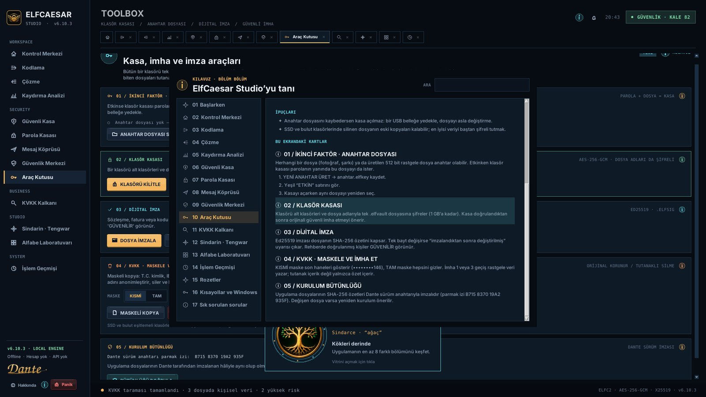
NASIL KULLANILIR
- Kurulumdan sonra ilk açılışta kısa bir tanıtım ve “Kurucu Elf” rozetin gelir; istediğin an GEÇ ile atlayabilirsin.
- Sol menü bölümleri gruplar: WORKSPACE (Elf yazısı), SECURITY (kasa, köprü, güvenlik, araçlar), BUSINESS (KVKK), STUDIO (Tengwar, alfabe) ve SYSTEM (işlem geçmişi).
- Açtığın her bölüm üstte sekme olur. Ctrl+1…0 bölümler arasında geçer, Ctrl+W sekmeyi kapatır, Ctrl+Tab sıradakine geçer.
- Her bölümün ve kartın başlığındaki ⓘ düğmesi o yerin kılavuzunu açar. F1 her zaman bu kılavuzu açar.
- Sağ üstteki GÜVENLİK rozeti 0–100 güvenlik seviyeni gösterir; tıklayınca Güvenlik Merkezi açılır.
- Yalnızca güvenlik araçlarını görmek istersen Güvenlik Merkezi → KORUMALAR → Arayüz modu: SADE (ELFC2, Tengwar ve Alfabe ekranları gizlenir).
- Bir sorun mu var? Hakkında → HATA BİLDİR: içerik içermeyen tanı raporu panoya kopyalanır ve beta bildirim sayfası açılır.
İPUÇLARI
- İlk iş: Güvenli Kasa’da kendi kimliğini oluştur ve Güvenlik Merkezi’ndeki önerileri yeşile çevir.
- Panik düğmesi (sol alt, Ctrl+Shift+L) açık metinleri, panoyu ve oturumu anında temizler.
Kontrol Merkezi
Uygulamanın giriş ekranı. Animasyonlu kripto çekirdeği, hızlı başlangıç düğmeleri, bölüm kartları ve bu oturumdaki işlemlerin canlı grafiği burada.
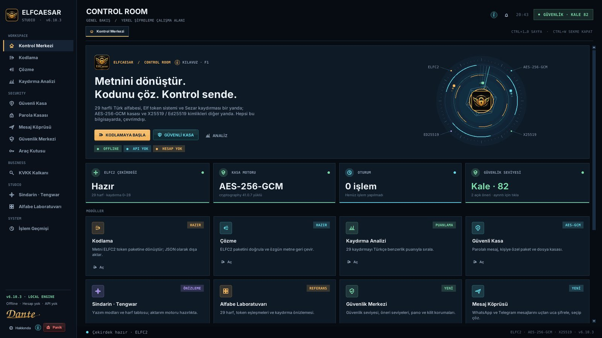
NASIL KULLANILIR
- KODLAMAYA BAŞLA, GÜVENLİ KASA ve ANALİZ düğmeleri en çok kullanılan bölümlere götürür.
- Özellik kartlarındaki Aç düğmesi ilgili bölümü yeni sekmede açar.
- Sistem Aktivitesi grafiği son 30 dakikadaki işlemleri kategoriye göre gösterir; Tümü işlem geçmişini açar.
İPUÇLARI
- Grafik yalnızca bu oturumu gösterir; içerik değil, yalnızca işlem türü ve saat tutulur.
BU EKRANDAKİ KARTLAR · ⓘ
Son 30 dakikada yaptığın işlemlerin (kodlama, kasa, kimlik, dosya) sayısı. Hiçbir metin veya dosya içeriği kaydedilmez.
Kodlama
Metni ELFC2 Elf token biçimine dönüştürür: 29 harfli Türk alfabesi + Sezar kaydırması + Elf işaretleri. Eğlenceli, gizli not ve oyun içindir; gerçek gizlilik için Güvenli Kasa’yı kullan.
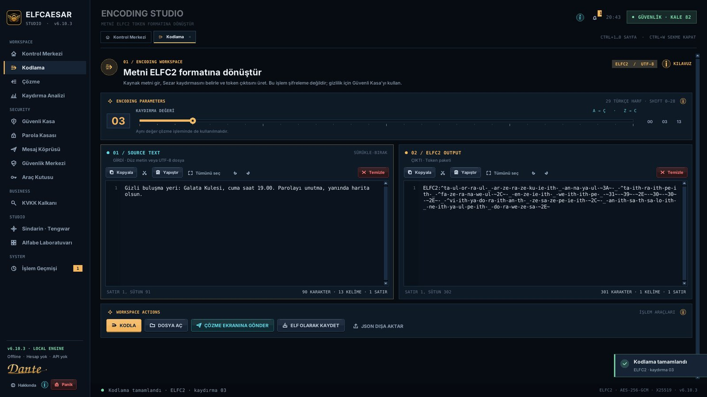
NASIL KULLANILIR
- GİRDİ alanına metni yaz, yapıştır veya DOSYA AÇ ile .txt yükle (dosyayı sürükleyip bırakmak da olur).
- Kaydırma (shift) değerini 0–28 arasında seç. Karşı taraf aynı değeri bilmelidir.
- KODLA’ya bas; SONUÇ alanında ELFC2 paketi oluşur.
- ÇÖZME EKRANINA GÖNDER ile hemen test et, ELF OLARAK KAYDET ile .elf dosyası yap veya JSON DIŞA AKTAR.
İPUÇLARI
- ELFC2 bir kodlamadır, şifreleme değildir: 29 denemede çözülebilir (Kaydırma Analizi bunu gösterir).
- Metinde T.C. kimlik, IBAN, kart veya parola varsa uygulama kodlamadan önce uyarır.
BU EKRANDAKİ KARTLAR · ⓘ
Kaydırma değeri harfleri 29 harflik alfabede kaç adım ilerleteceğini belirler. Canlı önizleme seçtiğin değerin etkisini gösterir.
Kodla, dosya aç, çözme ekranına gönder, .elf olarak kaydet veya JSON dışa aktar. Editörlerde Ctrl+A, Ctrl+X/C/V, Ctrl+Z/Y çalışır.
Çözme
ELFC2 paketini doğrular ve özgün metne geri çevirir.
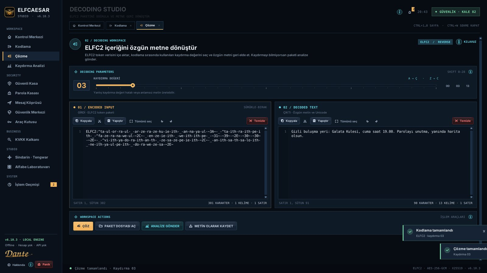
NASIL KULLANILIR
- ELFC2 paketini GİRDİ alanına yapıştır veya PAKET DOSYASI AÇ ile .elf dosyası seç.
- Kodlarken kullanılan kaydırma değerini seç ve ÇÖZ’e bas.
- Kaydırmayı bilmiyorsan ANALİZE GÖNDER: 29 olasılık puanlanır, en olası metin bulunur.
- METİN OLARAK KAYDET ile sonucu .txt dosyasına yaz.
İPUÇLARI
- Paket bozuksa hangi kısmın geçersiz olduğu bildirilir; kopyalarken eksik kalan karakterleri kontrol et.
BU EKRANDAKİ KARTLAR · ⓘ
Paketi çözmek için kaydırma değeri. Yanlış değer anlamsız metin üretir.
Çöz, paket dosyası aç, analize gönder veya sonucu metin olarak kaydet.
Kaydırma Analizi
Bir ELFC2 paketinin 29 olası kaydırmasını Türkçe benzerlik puanıyla sıralar. Kaydırmayı bilmeden çözmeyi ve ELFC2’nin neden şifreleme olmadığını gösterir.
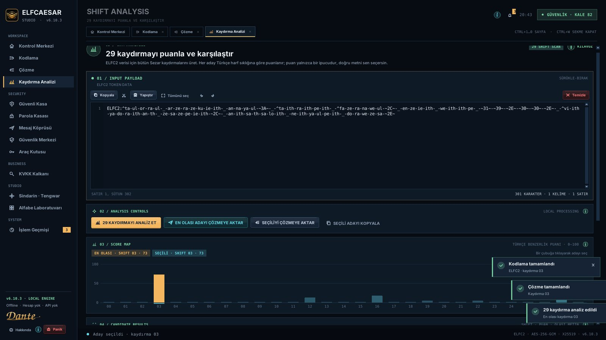
NASIL KULLANILIR
- Paketi girdiye yapıştır veya Çözme ekranından ANALİZE GÖNDER.
- 29 KAYDIRMAYI ANALİZ ET’e bas; her kaydırma 0–100 arası puanlanır.
- Puan haritasında en yüksek çubuk en olası kaydırmadır.
- EN OLASI ADAYI ÇÖZMEYE AKTAR veya listeden seçip SEÇİLİYİ ÇÖZMEYE AKTAR.
İPUÇLARI
- Kısa metinlerde puanlar birbirine yakın olabilir; ilk birkaç adayı göz ile kontrol et.
BU EKRANDAKİ KARTLAR · ⓘ
Analizi başlatır ve seçilen adayı çözmeye aktarır veya kopyalar.
Her kaydırmanın Türkçe harf sıklığı, sık kelimeler ve hece yapısına göre puanı.
Kaydırma, puan ve olası metin tablosu; en olası aday en üstte.
Güvenli Kasa
Gerçek şifreleme: AES-256-GCM + scrypt ile parolalı mesaj ve dosya kasası; X25519/Ed25519 ile kişisel kimlik ve kişiye özel şifreli mesaj.
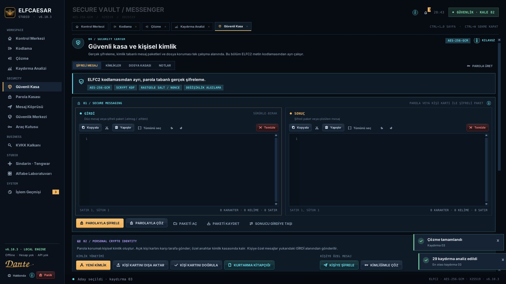
NASIL KULLANILIR
- Kimliğini oluştur: YENİ KİMLİK → adını ve güçlü bir parola cümlesi gir → .elfid dosyasını güvenli yere kaydet.
- KİŞİ KARTINI DIŞA AKTAR ile .elfcontact kartını yazışacağın kişilere gönder; onların kartlarını KİŞİ KARTINI DOĞRULA ile içe aktar.
- Mesaj: GİRDİ’ye yaz → PAROLAYLA ŞİFRELE ya da KİŞİYE ŞİFRELE → paketi gönder. Gelen kişisel mesajı KİMLİĞİMLE ÇÖZ açar.
- Dosya: DOSYA / GÖRÜNTÜ ŞİFRELE → dosya seç → parola → yanına .elfvault oluşur. Çözmek için ŞİFRELİ DOSYAYI ÇÖZ.
- PAROLA ÜRET güçlü bir parola cümlesi üretip panoya kopyalar (pano korumalı).
İPUÇLARI
- Parola en az 12 karakter olmalı; sızıntı listelerinde geçen parolalar kabul edilmez.
- Parolayı unutursan kasayı kimse açamaz — KURTARMA KİTAPÇIĞI ile kimliğini kâğıda (QR + satırlar) yedekle; KİTAPÇIKTAN GERİ YÜKLE ile geri al.
- Kişi kartının parmak izini karşı tarafla telefonda karşılaştır (güvenlik kelimeleri).
BU EKRANDAKİ KARTLAR · ⓘ
Metni parolayla (ELFVAULT1) veya bir kişinin açık anahtarıyla (ELFDM1) şifreler. Paket kopyalanabilir, .elmsg olarak kaydedilebilir.
- Girdiye mesajı yaz.
- PAROLAYLA ŞİFRELE’ye bas ve parolayı iki kez gir.
- Sonucu kopyala veya PAKETİ KAYDET.
- Alıcı PAROLAYLA ÇÖZ ile açar.
X25519 (şifreleme) ve Ed25519 (imza) anahtar çiftin. Özel anahtar parolalı .elfid kasasında durur; kişi kartı yalnızca açık anahtarları içerir.
Her tür dosyayı (PDF, Office, fotoğraf, ZIP) AES-256-GCM ile şifreler. Dosya adı kasanın içinde saklanır; çözerken geri gelir. Klasörler için Araç Kutusu’nu kullan.
Kasanın sınırları: parola kurtarılamaz, açık metin bellekte geçici tutulur, ekran görüntüsü kalkanı telefon kamerasını engelleyemez.
Şu an açık olan kimliğin ve parmak izi. Parmak izini karşı tarafla bağımsız bir kanaldan karşılaştır.
İçe aktarılan bir kişinin açık anahtarları ve parmak izi. Doğrulamadan güvenme.
Parola Kasası
Bütün parolaların tek ana parolayla korunan AES-256-GCM kasasında. Tarayıcılardan içe aktar, denetle, Domino analiziyle zincirleme riskleri gör, Ctrl+Alt+P ile panoya dokunmadan doldur; Dijital Miras ve Baskı Parolası ile en zor anlara hazırlan.
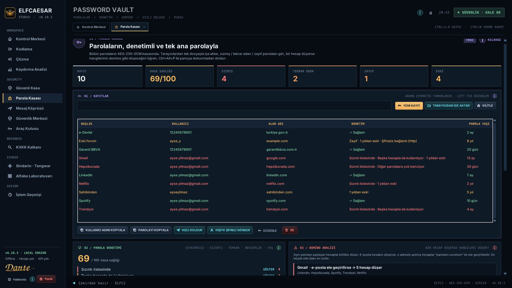
NASIL KULLANILIR
- KASA OLUŞTUR ile ana parolanı belirle (sızmış parolalar kabul edilmez). Kasa kilitlenince, panikte ve otomatik kilitte bellekten silinir.
- TARAYICIDAN İÇE AKTAR: Chrome/Edge/Brave/Opera/Firefox'ta parolaları dışa aktar, oluşan CSV'yi seç; açık CSV istersen güvenle imha edilir.
- Arama kutusu yazdıkça başlık, alan adı ve kullanıcı adlarını önerir: ↑↓ ile seç, Tab ile tamamla.
- PAROLAYI KOPYALA pano korumasıyla kopyalar; HIZLI DOLDUR ya da her yerde Ctrl+Alt+P kullanıcı adı + Tab + parolayı yazar.
- Parola Denetimi sızmış, tekrar eden, benzer, zayıf ve eski parolaları gösterir; GÖSTER listeyi o soruna göre süzer.
- Domino Analizi, bir hesabın düşmesi hâlinde başka hangi hesapların düşeceğini sıralar.
- KİŞİYE ŞİFRELİ GÖNDER bir kaydı yalnızca seçtiğin kişinin açabileceği bir sohbet mesajına çevirir.
- Tarayıcı eklentisi: EKLENTİYİ KUR → chrome://extensions → Geliştirici modu → Paketlenmemiş öğe yükle → TarayiciEklentisi klasörü; sonra eklenti simgesi → EŞLEŞTİR → uygulamada aynı kodu onayla. Giriş formlarındaki ElfCaesar düğmesi birebir eşleşen kaydı doldurur.
İPUÇLARI
- Tarayıcının şifreli parola veritabanı bilerek okunmaz: bu, parola çalan yazılımların yöntemidir. Dışa aktarma senin onayınla olur.
- ÇEVRİM İÇİ SIZINTI KONTROLÜ isteğe bağlıdır ve yalnızca SHA-1 özetinin ilk 5 karakterini gönderir (k-anonimlik).
- Kopyaladığın bir bağlantı kasandaki bir siteyi taklit ediyorsa (paypa1.com, trendyol.com.giris.xyz) pano radarı uyarır.
BU EKRANDAKİ KARTLAR · ⓘ
Kasa kilitliyken hiçbir kayıt bellekte değildir. Ana parolayla aç, ilk kez kullanıyorsan oluştur; başka bir kasa dosyası seçebilir veya mirastan kurtarabilirsin.
Parola Kasası'nın altı ana özelliğinin kısa tanıtımı.
Otomatik tamamlamalı arama, kayıt listesi (denetim sonucu ve parola yaşıyla), kopyalama, Hızlı Doldur, paylaşım, düzenleme ve silme. Çift tık düzenler, Enter parolayı kopyalar.
- Aramaya birkaç harf yaz.
- ↑↓ ile öneriyi seç, Tab ile tamamla.
- Enter ile parolayı kopyala.
Kasa sağlık puanı (0–100) ve sorun sayıları: sızıntı listesinde, başka hesapta da kullanılan, birbirine çok benzeyen (Ankara2023 / Ankara2024), zayıf, 1 yıldan eski, şifresiz bağlantı.
Aynı parolayı paylaşan hesaplar ve e-posta hesabıyla sıfırlanabilen hesaplar üzerinden zincirleme ele geçirme hesabı. Kayıtta kurtarma e-postası belirtirsen analiz daha isabetli olur.
Ctrl+Alt+P ön plandaki pencereyi tanır, uyan kayıtları ★ ile öne çıkarır, seçileni klavyeden yazar (panosuz); hedef pencere öne gelmezse güvenlik için hiçbir şey yazmaz. Bağlantı denetleyici ve pano radarı benzer alan adlarını yakalar. Tarayıcı eklentisi adres çubuğundaki gerçek alan adını doğrular, yalnızca birebir eşleşen kaydı doldurur ve taklit sitede kırmızı uyarı gösterir.
Kurtarma anahtarı Shamir'in Gizli Paylaşımıyla k / n parçaya bölünür. Miras kasası her kayıtta güncellenir; MİRASTAN KURTAR yeterli parça ve miras dosyasıyla kasayı yeni bir ana parolayla geri getirir.
Her kaydetmede önceki sürümün şifreli kopyası “yedekler” klasörüne alınır (son 20) ve YEDEKLER ile geri yüklenir. BULUT KLASÖRÜNE TAŞI ile kasayı OneDrive/Dropbox/Google Drive'a koy: diğer bilgisayardaki ElfCaesar aynı dosyayı açar, iki cihazdaki değişiklikler kayıt kayıt birleştirilir; sunucu yoktur.
- BULUT KLASÖRÜNE TAŞI → OneDrive klasörünü seç.
- Diğer bilgisayarda BAŞKA KASA DOSYASI → aynı dosyayı seç.
- Eşitleme servisi çakışma kopyası oluşturursa ÇAKIŞMALARI BİRLEŞTİR.
İkinci bir parola, zararsız kayıtlar içeren ayrı bir kasa açar. Zorla açtırılma durumunda gerçek kasan ortaya çıkmaz. Sahte kasanın varlığı bir dosya olarak bilgisayarda bulunur.
Mesaj Köprüsü
WhatsApp, Telegram, e-posta veya herhangi bir sohbet uygulamasında uçtan uca şifreli mesaj. Mesaj panoya şifreli olarak kopyalanır, sohbete yapıştırılır; karşı taraf tek tuşla çözer.
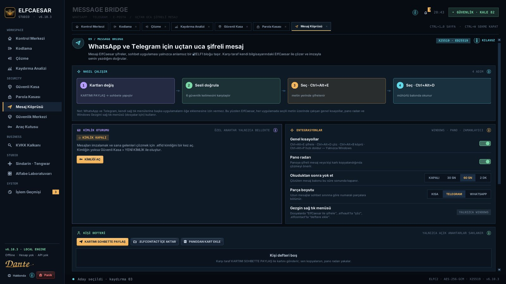
NASIL KULLANILIR
- KİMLİĞİ AÇ ile oturum başlat (özel anahtar yalnızca bellekte durur, panik/kilitte kapanır).
- KARTIMI SOHBETTE PAYLAŞ: kişi kartın sohbete yapıştırılabilir metin olarak kopyalanır; karşı taraf PANODAN KART EKLE ile ekler.
- SESLİ DOĞRULA: iki taraf aynı güvenlik kelimelerini görüyorsa kişi “doğrulandı” olur.
- MESAJ YAZ: alıcıyı seç, yaz, ŞİFRELE VE KOPYALA → sohbete Ctrl+V.
- Gelen mesaj: kopyala → PANODAN ÇÖZ. Pano radarı açıksa şifreli mesaj kopyaladığında bildirim gelir.
- Hızlı yol: sohbet kutusunda yaz, Ctrl+Alt+E yerinde şifreler; şifreli mesajı seçip Ctrl+Alt+D çözer.
İPUÇLARI
- Okuduktan sonra yok et: çözülen mesaj penceresi belirlenen sürede kendini kapatır.
- Grup mesajı: birden çok alıcı seçebilirsin; her alıcı kendi anahtarıyla açar.
- Mini köprü (Ctrl+Alt+B) her zaman üstte duran küçük bir şifreleme penceresidir.
BU EKRANDAKİ KARTLAR · ⓘ
Dört adım: kişi kartlarını değiş → 6 güvenlik kelimesini sesli karşılaştır → sohbet kutusunda metni seçip Ctrl+Alt+E ile yerinde şifrele → gelen şifreli metni seçip Ctrl+Alt+D ile mühürlü balonda oku.
Kimlik kasası bir kez açılır; özel anahtar diske yazılmadan bellekte tutulur. Ekran kilidi, panik veya OTURUMU KAPAT ile bellekten silinir.
Windows kısayolları (Ctrl+Alt+E/D/B), Gezgin sağ tık menüsü, pano radarı ve okuduktan sonra yok et süresi buradan açılır/kapanır.
Yalnızca açık anahtarlar saklanır. Yeşil onay işaretli kişiler güvenlik kelimeleriyle doğrulanmıştır.
Alıcıyı (veya parolalı modu) seç, mesajı yaz; şifreli ELF1 metni panoya kopyalanır. Uzun mesajlar sohbet sınırına göre otomatik parçalara bölünür.
Şifreli metni yapıştır veya panodan al. Gönderen imzası doğrulanır ve kim olduğu gösterilir.
Güvenlik Merkezi
Güvenlik seviyen (0–100), Çırak’tan Mithril’e kademeler, önceliğe göre öneriler, korumalar ve parolanın gerçek kırılma süresini gösteren Parola Laboratuvarı.
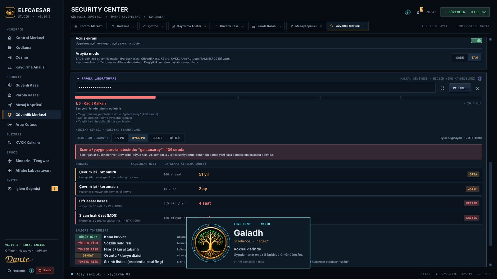
NASIL KULLANILIR
- Güvenlik seviyesi göstergesi yapılandırmanı puanlar; hedef 92+ (Mithril).
- ÖNERİ SEVİYELERİ listesini yukarıdan aşağı uygula; KRİTİK ve YÜKSEK önce.
- KORUMALAR’dan pano temizleme süresini, otomatik kilidi ve ekran görüntüsü kalkanını ayarla.
- PAROLA LABORATUVARI’na bir parola yaz: seviye, sızıntı eşleşmesi ve donanıma göre kırılma süresi canlı hesaplanır.
İPUÇLARI
- Laboratuvara yazılan parola hiçbir yere kaydedilmez; yine de gerçek parolanı yazmak yerine benzerini dene.
BU EKRANDAKİ KARTLAR · ⓘ
Kimlik, yedek, kilit, pano, ekran kalkanı ve parola gücünden hesaplanan 0–100 puan.
Çırak (0) → Muhafız (40) → Şövalye (60) → Kale (80) → Mithril (92).
Eksik korumalar KRİTİK, YÜKSEK, ORTA, DÜŞÜK ve BİLGİ olarak sıralanır; çoğu tek tıkla düzeltilir.
Pano koruması (Windows Pano Geçmişi ve bulut panosu dahil), otomatik gizlilik kilidi, hassas veri uyarısı, ekran görüntüsü kalkanı, açılış ekranı ve arayüz modu (SADE / TAM).
Parolanın sızıntı listelerinde olup olmadığını, 5 saldırı senaryosunda ortalama kırılma süresini ve bulut/çiftlik için tahmini kırma maliyetini gösterir.
Araç Kutusu
Klasör kasası, anahtar dosyası (ikinci faktör), dijital imza, KVKK maskeli kopya, güvenli imha + tutanak ve kurulum bütünlüğü denetimi.
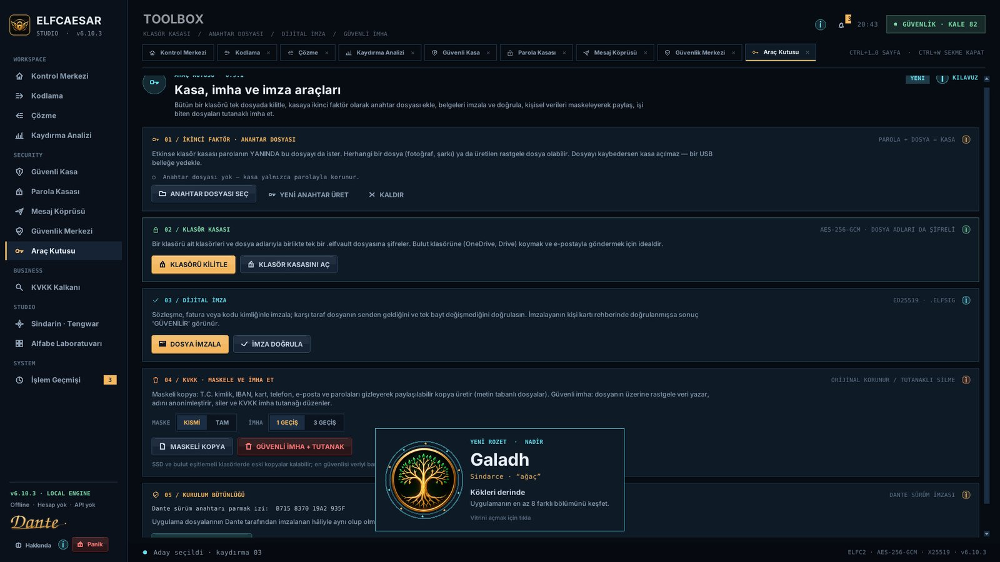
NASIL KULLANILIR
- Klasörü kilitle: KLASÖRÜ KİLİTLE → klasör seç → kasa adı → parola. Gezgin’de klasöre sağ tık da olur.
- Ek güvenlik: önce YENİ ANAHTAR ÜRET veya ANAHTAR DOSYASI SEÇ; kasa parola + bu dosya olmadan açılmaz.
- İmzala: DOSYA İMZALA → dosya → kimlik oturumu → yanına .elfsig oluşur. Doğrulama: .elfsig dosyasına çift tık.
- Paylaşmadan önce MASKELİ KOPYA ile kişisel verileri gizle; işi biten dosyaları GÜVENLİ İMHA + TUTANAK ile sil.
- BÜTÜNLÜĞÜ DOĞRULA: kurulu dosyaların Dante imzalı sürümle aynı olduğunu denetler.
İPUÇLARI
- Anahtar dosyasını kaybedersen kasa açılmaz: bir USB belleğe yedekle, dosyayı asla değiştirme.
- SSD ve bulut klasörlerinde silinen dosyanın eski kopyaları kalabilir; en iyisi veriyi baştan şifreli tutmak.
BU EKRANDAKİ KARTLAR · ⓘ
Herhangi bir dosya (fotoğraf, şarkı) ya da üretilen 512 bit rastgele dosya anahtar olabilir. Etkinken klasör kasası parolanın yanında bu dosyayı da ister.
- YENİ ANAHTAR ÜRET → anahtar.elfkey kaydet.
- Yeşil “ETKİN” satırını gör.
- Kasayı açarken aynı dosyayı yeniden seç.
Klasörü alt klasörleri ve dosya adlarıyla tek .elfvault dosyasına şifreler (1 GB’a kadar). Kasa doğrulandıktan sonra orijinali güvenli imha etmeyi önerir.
Ed25519 imzası dosyanın SHA-256 özetini kapsar. Tek bayt değişirse “imzalandıktan sonra değiştirilmiş” uyarısı çıkar. Rehberde doğrulanmış kişiler GÜVENİLİR görünür.
KISMİ maske son haneleri gösterir (••••••••146), TAM maske hepsini gizler. İmha 1 veya 3 geçiş rastgele veri yazar; tutanak içerik değil yalnızca özet içerir.
Uygulama dosyalarının SHA-256 özetleri Dante sürüm anahtarıyla imzalıdır (parmak izi B715 8370 19A2 935F). Değişen dosya varsa yeniden kurulum önerilir.
KVKK Kalkanı
Seçtiğin klasörlerdeki belgelerde T.C. kimlik, IBAN, kart, telefon, e-posta ve parola ifadelerini bulur, risklerine göre sıralar, tek tıkla kasaya alır ve yazdırılabilir envanter raporu üretir.
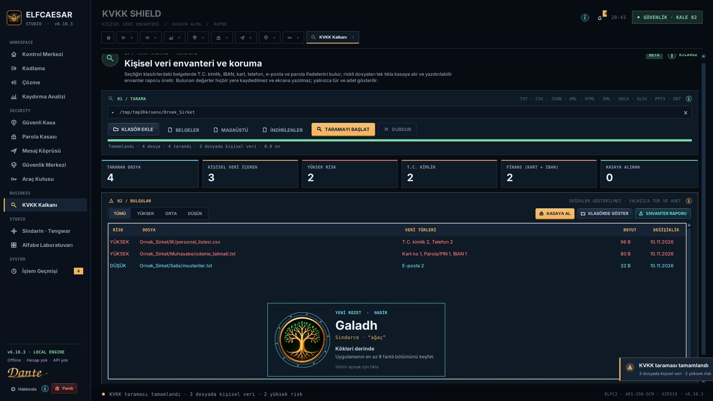
NASIL KULLANILIR
- KLASÖR EKLE veya BELGELER / MASAÜSTÜ / İNDİRİLENLER ile taranacak yerleri seç.
- TARAMAYI BAŞLAT; ilerleme canlı gösterilir, istediğin an DURDUR.
- Bulgular yüksek/orta/düşük riske göre listelenir; değerler asla gösterilmez, yalnızca tür ve adet.
- Riskli dosyaları seç → KASAYA AL (AES-256-GCM, doğrulamalı) veya KLASÖRDE GÖSTER.
- ENVANTER RAPORU ile tarihli, SHA-256 özetli, Dante imzalı raporu yazdır veya PDF olarak kaydet.
İPUÇLARI
- Kişisel veriyi paylaşman gerekiyorsa Araç Kutusu’ndaki MASKELİ KOPYA’yı kullan.
- Bu araç hukuki görüş değildir; KVKK uyumu için hukuk danışmanına başvur.
BU EKRANDAKİ KARTLAR · ⓘ
TXT, CSV, JSON, XML, HTML, EML, DOCX, XLSX, PPTX, ODT/ODS dosyaları taranır. T.C. kimlik ve kart numaraları sağlama algoritmasıyla doğrulanır, sistem klasörleri atlanır.
Filtre ile riske göre süz, Ctrl/Shift ile çoklu seç, çift tıkla klasörde göster. Kasaya alınan dosyalar yeşile döner.
Sindarin · Tengwar
Tolkien’in Tengwar yazısı için hazırlık alanı: dil, mod ve yazı ilişkisi, Témar harf tablosu ve gelecek aktarım motorunun yol haritası. Bu bir dil çevirisi değildir.
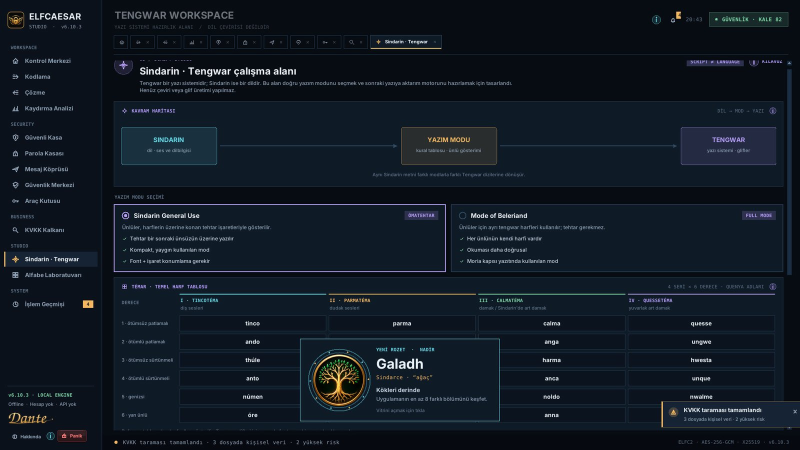
NASIL KULLANILIR
- Kavram haritası dil → mod → yazı farkını anlatır.
- Témar tablosunda 4 seri × 6 derece harfleri ve Quenya adlarını incele.
- Yol haritası 7.0.0’daki fonetik motoru ve glif fontunu tanıtır.
BU EKRANDAKİ KARTLAR · ⓘ
Sindarin bir dildir, Tengwar bir yazı sistemidir; mod ikisini birbirine bağlayan kuraldır.
Tengwar’ın 24 temel harfi: seriler ağız konumunu, dereceler sesin türünü gösterir.
Fonetik aktarım motoru ve font desteği planı.
Alfabe Laboratuvarı
29 harfli Türk alfabesi ve her harfin Elf token karşılığı; seçilen kaydırmanın harfleri nasıl değiştirdiğini gösterir.
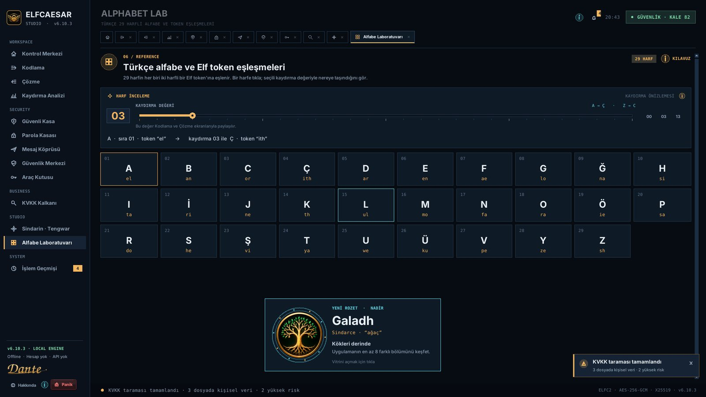
NASIL KULLANILIR
- Bir harfe tıkla: büyük/küçük biçimi, sırası ve Elf tokenı görünür.
- Kaydırma önizlemesi harfin her kaydırmada neye dönüştüğünü gösterir.
BU EKRANDAKİ KARTLAR · ⓘ
Seçili harfin token ve kaydırma önizlemesi.
İşlem Geçmişi
Oturumdaki bildirimler ve işlemler: zaman, kategori, sonuç. İçerik (metin, parola, dosya içeriği) kaydedilmez.
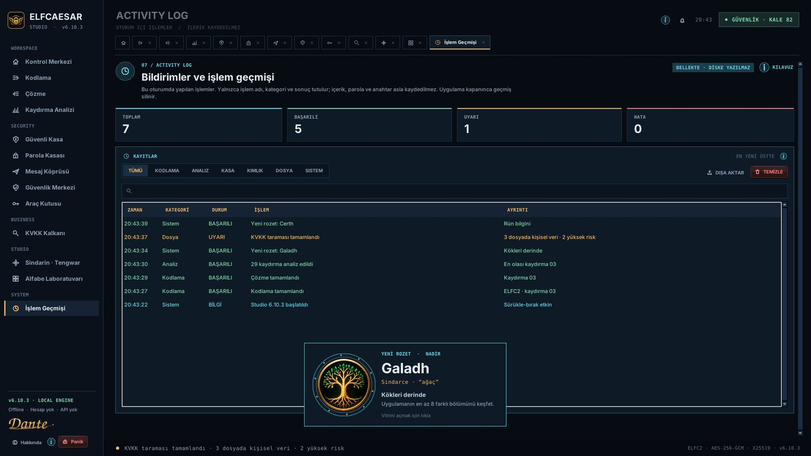
NASIL KULLANILIR
- Üstteki sayaçlar toplam, başarılı, uyarı ve hata sayısını gösterir; filtreyle listeyi daralt.
- DIŞA AKTAR ile kayıtları dosyaya yaz.
- TEMİZLE ile geçmişi sil.
İPUÇLARI
- Panik modu geçmişi de temizler.
BU EKRANDAKİ KARTLAR · ⓘ
En yeni kayıt en üstte. Hatalar kırmızı, uyarılar sarı görünür.
Rozetler
Uygulamayı keşfettikçe 15 rozet kazanırsın. Adları Tolkien'in Elf dillerinden (Sindarce ve Quenya) gelir: Annon (kapı), Tîw (harfler), Parf (kitap), Draug (kurt), Certh (rün), Istar (büyücü), Galadh (ağaç), Ithildin (ay-yıldız gümüşü), Thoron (kartal), Lassë (yaprak), Elen (yıldız), Elessar (elf taşı), Tirith (nöbet), Mithril (gri parıltı), Aran (kral). Rozetler yalnızca kimlik ve tarih olarak bu bilgisayarda saklanır.
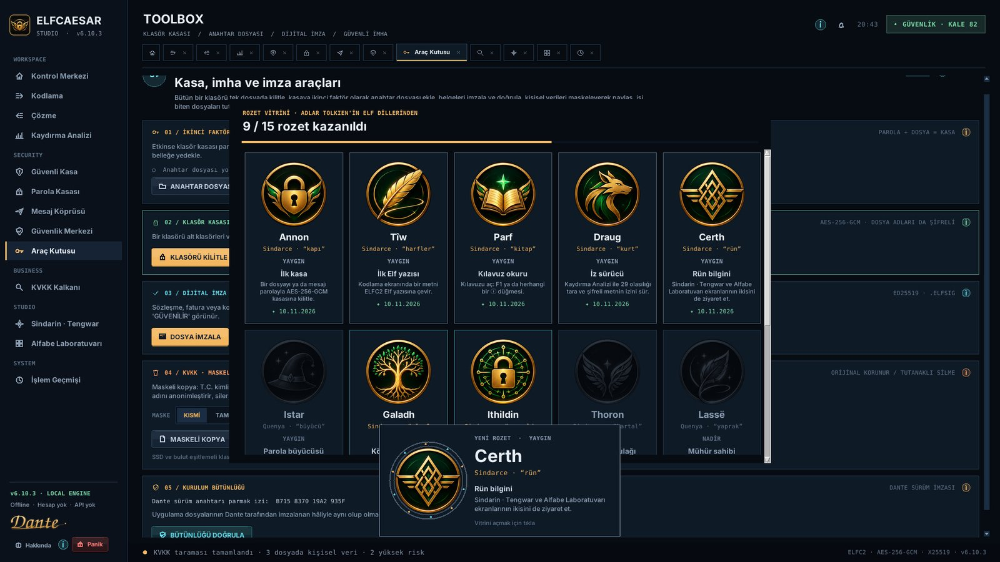
NASIL KULLANILIR
- Kontrol Merkezi'ndeki ROZET VİTRİNİ kartı kazandığın rozetleri renkli, kilitli olanları gri gösterir.
- VİTRİNİ AÇ (veya Hakkında > ROZET VİTRİNİ) her rozetin adını, anlamını, nadirliğini ve nasıl kazanılacağını gösterir.
- Yeni bir rozet kazandığında ekranın altında parlayan bir kutlama kartı belirir; tıklarsan vitrin açılır.
- Nadirlik: YAYGIN (ilk adımlar), NADİR (gerçek güvenlik işleri), DESTANSI (Tirith, Mithril), EFSANEVİ (Aran: hepsini topla).
İPUÇLARI
- Mithril için güvenlik seviyesi 92+, kendi kimliğin ve basılmış kâğıt kurtarma kitapçığı gerekir.
- Rozetler hiçbir içerik kaydetmez; parola, metin veya dosya adı tutulmaz.
Kısayollar ve Windows
Klavye kısayolları ve Gezgin entegrasyonu.
NASIL KULLANILIR
- F1 — Kılavuz · Ctrl+1…0 — bölümler · Ctrl+W — sekmeyi kapat · Ctrl+Tab — sonraki sekme
- Ctrl+Alt+E — sohbet kutusundaki metni yerinde şifrele · Ctrl+Alt+D — seçili şifreli mesajı çöz · Ctrl+Alt+B — mini köprü · Ctrl+Alt+P — Hızlı Doldur (parola)
- Ctrl+Shift+L — panik: açık metinleri, panoyu ve oturumu temizle
- Gezgin sağ tık: “ElfCaesar ile şifrele”, “ElfCaesar ile çöz”, “ElfCaesar ile klasörü kilitle”, “ElfCaesar ile imzala”, “ElfCaesar ile imzayı doğrula”, “Kişi defterine ekle”.
- Dosya türleri: .elfvault (kasa), .elfid (kimlik), .elfcontact (kişi kartı), .elmsg/.elfdm (mesaj), .elfsig (imza), .elfkey (anahtar).
İPUÇLARI
- Windows ile başlat seçeneği uygulamayı arka planda açar; kısayollar hemen hazır olur.
Sık sorulan sorular
En çok sorulanlar.
NASIL KULLANILIR
- Parolamı unuttum, kasayı açabilir misiniz? — Hayır. Kimse açamaz; bu güvenliğin kendisidir. Kurtarma kitapçığı kimliği kâğıda yedekler ama parolayı yazmaz.
- Verilerim internete gidiyor mu? — Hayır. Uygulama çevrimdışıdır; sunucu, hesap, telemetri yoktur.
- Windows “bilinmeyen yayımcı” uyarısı veriyor? — Kurulum Dante tarafından imzalıdır; Microsoft tarafından tanınan sertifika süreci tamamlanana kadar SmartScreen “Ek bilgi → Yine de çalıştır” gerektirebilir.
- ELFC2 ile kasa arasındaki fark? — ELFC2 eğlenceli bir kodlamadır (29 denemede çözülür); kasa AES-256-GCM ile gerçek şifrelemedir.
- Karşı tarafta uygulama yoksa? — Parolalı kasa paketi her ElfCaesar kurulumunda açılır; kişiye özel mesaj için iki tarafta da uygulama gerekir.